撤离区
 Extraction Zone
Extraction Zone基本信息 信息
阵营
描述
the 撤离区 is a landing pad designed for the 鹈鹕 1, only one can be found during missions.
the 撤离 Zone is a landing pad designed for the 鹈鹕 1. Information on how to 撤离 can be found on the 撤离 page.
Possible 撤离 Point 变体
Unlike other variations of other 兴趣点, this one will always spawn, and there can only ever be one of these on the 任务 area.
| Variation | 图像 | 目录 | 备注 |
|---|---|---|---|
| 加固 House | 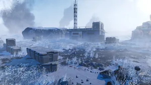 |
* 4 弹药箱 * 1 EAT-17 消耗性反坦克武器 * 0-1 MG-43 机枪 * 0-3 * 0-? * SEAF Communications Device |
Features a single house in between 3 large rocks, with 轻型 sticks leading up to the site. The site is 加固, featuring crates and some corpses. |
| Vending Machine Dock | 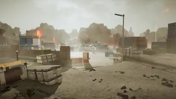 |
* 弹药箱 * * * Vending Machine * Forklift * Personal Device |
Features lots of Vending Machines, as well as some stacked cargo containers. |
| 山 Spiral | 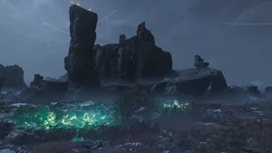 |
* |
A spiral 标题 upwards to the 撤离 beacon. It features two large rocks at the top for cover, and one on the path up. |
| Lakeside (变体 A) | 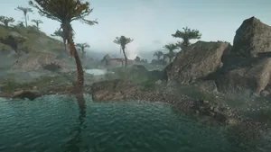 |
* 弹药箱 * * |
Features 2 or more lakes, in which entering will cause the 绝地潜兵 to begin drowning. The large rocks provide some 自然 cover. |
| Lakeside (变体 B) | 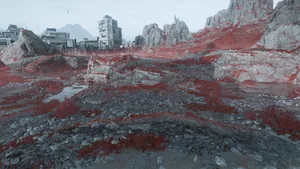 |
* |
Features 3 小型, 浅 lakes, as well as two overhead areas. The large rocks provide some 自然 cover. |
| 洞穴 | 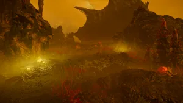 |
* 虫穴 * Bug Mines * * |
Found exclusively in Will always spawn with 敌人 present, regardless of 难度. |
| 高处 (Hive World) |
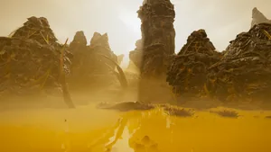 |
? | Found exclusively in |
| Colony Street | 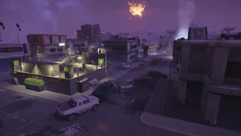 |
* |
Found exclusively in Colonies. |
| SEAF 撤离 Site | 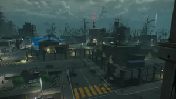 |
* 爆炸 Barrels * Forklift |
Found exclusively in Colonies. Features the landing area as well as a wide semi-empty area, along with 3 destroyed SEAF SAM Site towers. On |
| 高处 (City) | 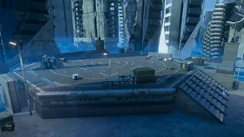 |
* 弹药箱 * Stim Crates * 1 GL-21 榴弹发射器 * 爆炸 Barrels |
Found exclusively in Cities. Features 3 stairways from each 方向, as well as a lower deck. Lots of cover and supplies everywhere. |
| Sunken (City) | 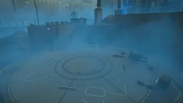 |
* 弹药箱 * Stim Crates * 手榴弹 Cases * 1 Break-Action 霰弹枪 |
Found exclusively in Cities. Features an overhead area above the landing site that contains some supplies. The walls can serve as cover, but 敌人 may also shoot from above. |
任务-Specific Zones
In certain close-quarters missions (such as the 撤离高价值资产 任务), unique 撤离 Zones will always spawn. 撤离 Beacons will never be present, as 鹈鹕 1 will almost immediately land as soon as the 任务 is 完成.
| Variation | 图像 | 目录 | 备注 |
|---|---|---|---|
| 机器人 Base | 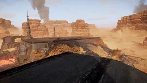 |
None | Exclusively found in the 歼灭 机器人 Forces 任务. Features an 机器人 landing pad in the highest point of the 任务 area. In other 变体 of this exact 任务 area, this site is covered by an air 控制 tower and 使用次数 an alternative landing pad. |
| Air 控制 Tower Site Low | * 1 EAT-17 消耗性反坦克武器 | Exclusively found in the 歼灭 机器人 Forces 任务. Features an 机器人 landing pad in a lower point of the 任务 area. | |
| Air 控制 Tower Site High | 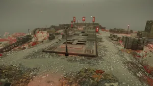 |
None | Exclusively found in the 歼灭 机器人 Forces 任务. Features an 机器人 landing pad in the center of the 任务 area. |
| 机器人 Mining Site | 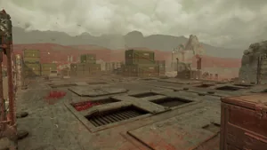 |
* 0-3 * 机器人 Barrels |
Exclusively found in the 歼灭 机器人 Forces 任务. Features an 机器人 landing pad in the highest point of the 任务 area. |
| Platinum Mine 高处 | 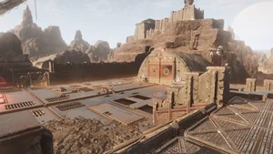 |
None | Exclusively found in the Rapid 获取 任务. Features an 机器人 landing pad in the center of the 任务 area. |
变更历史
补丁
描述
1.000.000
2024-02-08
Added to the game